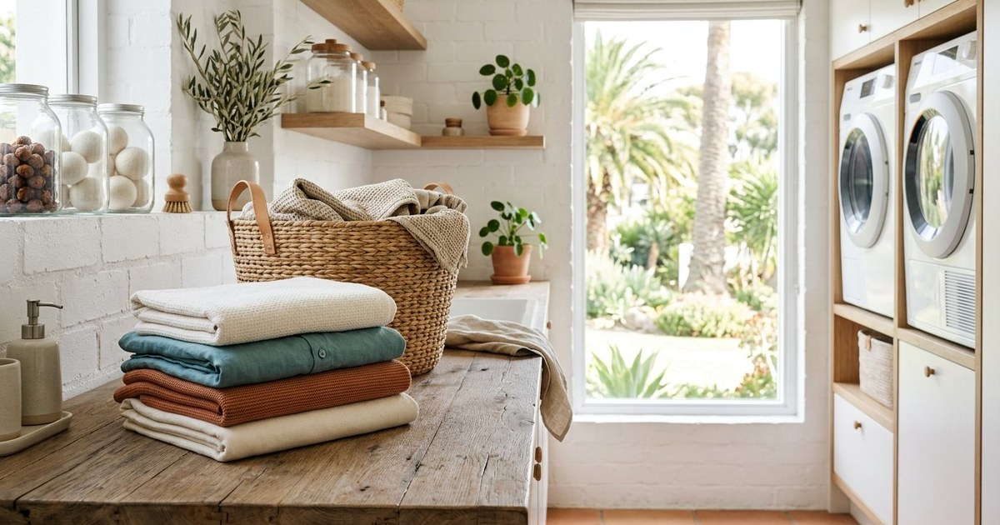

تكنولوجيا
خطة استرداد الحسابات قبل الاختراق: ورقة عمل عملية
خطة عملية لتجهيز بريد الاسترداد ورموز النسخ الاحتياطية والأجهزة الموثوقة وترتيب الحسابات قبل فقد الهاتف أو التعرض للاختراق.
محتوى عربي واضح في المنزل والطعام والمعرفة والتقنية، يُكتب ويُراجع بعناية ليمنحك فائدة عملية دون تعقيد.

خطة عملية لتجهيز بريد الاسترداد ورموز النسخ الاحتياطية والأجهزة الموثوقة وترتيب الحسابات قبل فقد الهاتف أو التعرض للاختراق.

دليل غسيل الملابس الصحيح: فرز الملابس، درجات حرارة الغسيل، اختيار المسحوق، إزالة البقع قبل الغسيل، والتجفيف السليم.

طريقة عمل بسبوسة بالقشطة خطوة بخطوة: المكونات، طريقة التحضير، القطر العطري، ونصائح للحصول على بسبوسة طرية ناجحة.

دليل للوقاية من حشرات المنزل وتقليل مصادرها واستخدام المصائد أو المنتجات المسجلة وفق التعليمات عند الحاجة.

7 خطوات مجانية لتسريع الكمبيوتر البطيء: إعادة التشغيل، برامج بدء التشغيل، تنظيف القرص، البرامج الضارة، والترقية الذكية.

8 حيل عملية لتوفير بيانات الجوال: معرفة التطبيقات الشرهة، إيقاف التحديثات التلقائية، تحميل الخرائط مسبقًا، وضغط الفيديو.

خطة تنظيف المطبخ في 30 دقيقة: الترتيب الصحيح للتنظيف، أدوات سريعة، وحيل لتوفير الوقت في المطابخ المزدحمة.
مجلة عربية تقدم محتوى عمليًا في النصائح المنزلية والوصفات والمعرفة والتكنولوجيا بلغة واضحة وتصميم مريح.
نعم، جميع المقالات متاحة للقراءة دون تسجيل أو اشتراك.
نراجع وضوح المقال ومصادر الادعاءات القابلة للتحقق، ونحدّث المحتوى عند اكتشاف خطأ أو تغير المعلومة.
نعم، نستقبل الاقتراحات والتصحيحات الموثقة عبر صفحة اتصل بنا.
تعرّف على طريقة اختيار الموضوعات ومراجعة المعلومات والتعامل مع التصحيحات في سياسة التحرير.